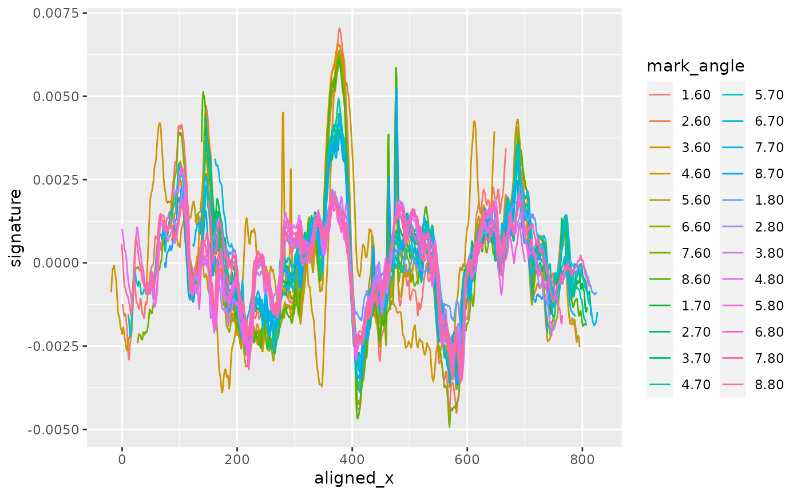
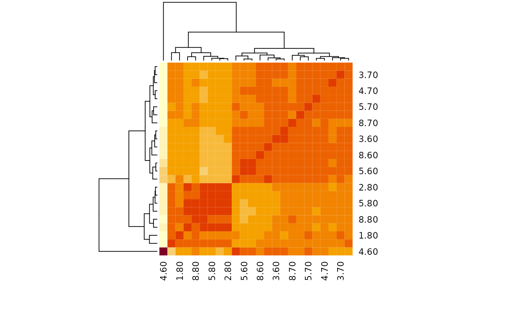

Align all signatures in the same group. All signatures in this group are aligned with respect to the first signature in a group. Alignments will vary depending on which signature is used as 'first'. TODO: check on resolution IMPORTANT: the value vectors have to be in the same order for each group and taken on the same, equi-distant grid (no missing values!)
Arguments
- data
data frame with id, signatures and grouping variable
- value
symbol for the signature values
- group
symbol (variable) for grouping
- min.overlap
value passed on to
get_ccf, seebulletxtrctr::get_ccf.
Value
data frame: the returned data frame has the same number of observations as the input,
but has the additional variables aligned_x and ccf. Note that aligned_x is reported in integer values.
For a conversion to the physical extent, scale by the resolution of the scan.
Examples
library(dplyr)
#>
#> Attaching package: ‘dplyr’
#> The following objects are masked from ‘package:stats’:
#>
#> filter, lag
#> The following objects are masked from ‘package:base’:
#>
#> intersect, setdiff, setequal, union
data(toolmarks)
names(toolmarks)
#> [1] "tool" "size" "side" "direction" "angle" "mark"
#> [7] "TID" "x" "y" "value" "signature"
tool2AL <- dplyr::filter(toolmarks, tool == 2, side=="A", size=="L")
# Align all signatures in one go
aligned <- tool2AL %>% mutate(mark_angle = interaction(mark, angle)) %>%
sig_align_set(value = signature, group = mark_angle, min.overlap = 500)
# Visualize the results:
library(ggplot2)
aligned %>%
ggplot(aes(x = aligned_x, y = signature, colour = mark_angle)) +
geom_line()

# HH: mark 4.60 is still travelling in reversed direction
wide <- aligned %>% select(aligned_x, signature, mark_angle) %>%
tidyr::pivot_wider(values_from = signature, names_from = mark_angle)
heatmap(cor(wide %>% select(-aligned_x), use="pairwise.complete"))

# Align signatures separately by angle
long <- tool2AL %>% group_by(angle) %>% tidyr::nest()
long <- long %>% mutate(
data = data %>% purrr::map(.f = function(d) {
d %>% sig_align_set(value = signature, group = mark, min.overlap=500)
})
)
long$data[[3]] %>% ggplot(aes(x = aligned_x, y = signature, colour = factor(mark))) + geom_line()
 long <- long %>% tidyr::unnest(col=data)
long %>%
ggplot(aes(x =aligned_x, y = signature, colour = factor(mark))) +
geom_line() +
facet_grid(angle~., labeller="label_both")
long <- long %>% tidyr::unnest(col=data)
long %>%
ggplot(aes(x =aligned_x, y = signature, colour = factor(mark))) +
geom_line() +
facet_grid(angle~., labeller="label_both")